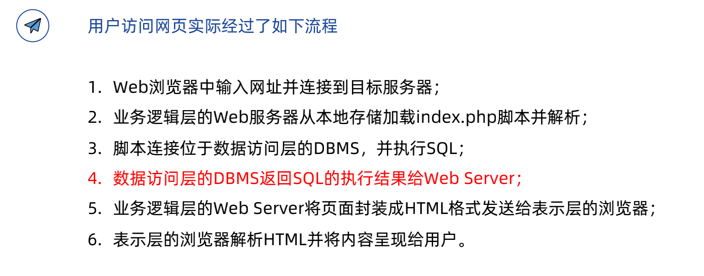

Web网络安全 - 极客时间 (Updating)
极客时间的 web网络安全攻防实战 课程记录
web 安全的根本性原因是 前端输入不可信
一、常用的工具
Burp-Suite: Burp Suite Professional is one of the most popular penetration testing and vulnerability finder toolscURL: 系统自带Postman: GUI式cURLWappalyzer: 网站技术栈分析HackBar: web安全工具插件
二、Web 后端安全
文件上传漏洞
举个例子，后端服务器若为 PHP，那么可以上传一个 shell.php 文件，里面包含
1 | # shell.php |
一旦文件上传成功，即可把下面的命令加入 post 请求体
1 | # 任意 Post 请求的请求体 |
工具：
- 可以用
中国菜刀，一个 win 平台的工具 - 使用
Docker运行 bWAPP 平台练习
初阶：后缀名绕过
1 | # 修改 shellp.php 的名字 |
1 | # 如何探究其原因 |
中阶：3种
前端验证绕过
很多 CMS(content management system) 都只在前端用 js 来做校验
漏洞利用流程
- 通过 Burp Suite 抓包，修改内容后放行
常见 - 通过 Chrome 禁止or删除 js 代码
- 通过 Burp Suite 抓包，修改内容后放行
.htaccess绕过- 前提：web server 支持
.htaccess分布式配置文件 - 原理：使用此文件绕过
黑名单过滤 - 例子：比如黑名单限制上传
php文件，但是上传jpg文件，利用.htaccess告诉目前文件夹可以去解析某一类文件。 - 用
php解析jpg
- 前提：web server 支持
1 | 白名单过滤：不能使用，因为 .htaccess 无法上传 |
大小写绕过
- Windows: 大小写
不敏感 - Linux: 大小写
敏感
- Windows: 大小写

高阶：3种
文件流绕过，针对 windows 文件流字符串截断，当拼接目录时文件头检测，(绕过白名单，需要检测文件内容时，注意不要有乱码)
SQL 注入漏洞
是发生于 应用程序与数据库 的安全漏洞
实际情况中，需要结合用户的输入动态构造SQL语句，导致此时有SQL注入风险
提交网页时，主要分 GET方法，POST方法
Web 应用三层架构
界面层 + 业务逻辑层 + 数据访问层
1 | 具体案例 |

md5解密网站 CMD5
三、Web 前端安全
XSS 跨站脚本攻击
主要分了 3 个类型 过数据库，反射型 不过数据库
- 反射型
- 储存型
- DOM型
危害
- 盗取cookie，盗取账户，恶意软件下载，键盘记录，广告引流
反射型
未经转义的用户输入：非持久化，需要用户点击
使用 bWAPP 进行 XSS 练习
诱导用户跳转
1 | <script> alert('test'); location.href="https://www.baidu.com"</script> |
使用软件 BeEF 进行 xss
储存型
区别：储存型 过数据库，反射型 不过数据库
DOM型
DOM XSS 经过 js 直接对 DOM tree 进行操作
mXss
Mutated Xss - 突变 Xss
与浏览器紧密相关，难度高
伪协议 与 编码绕过
伪协议
伪协议不同于因特网上所广泛使用的如 http://,https://,ftp://，在 URL 中使用，用于执行特
定的功能：
- Data 伪协议：
- data:text/html;base64, PHNjcmlwdD5hbGVydCgxKTs8L3NjcmlwdD4=
- JavaScript 伪协议 ：
- javascript:alert(“1”)
编码绕过
ISO （国际标谁化组织）制定的包括了地球上所有文化、所有字母和符号的编码，使用两个字节表示一个字符，
Unicode 只是一个符号集，它只规定了符号的二进制代码，却没有规定这个二进制代码应该如何存储。
具体存储由：UTF-8，UTF-16等实现。
解析一篇 HTML 文档时主要有三个处理过程：HTML解析，URL解析 和 JavaScript解析
1 | - HTML编码: &x116 |
演示示例：
- HTML解码
- URL解码
- JS解码
- 二层混淆解码
- 三层混淆解码：对 alert(1) 中的 r，先进行
js编码，后url编码，最后html编码。顺序刚好和解码顺序相反
CSRF
同源协议
- (协议、主机、端口)
- 如果两个 URL 的协议、主机、端口都相同，则认为这两个 URL 同源
分为 Cookie 和 DOM 来讨论
Cookie 和 DOM 的区别
- Cookie
- 父/子域名之间
原则上也无法获取Cookie，但是可以设置 Cookie 内的domain=example.com参数，使得a.example.com+b.example.com可以相互访问 cookie
- 父/子域名之间
- DOM
- 父/子域名之间可以操作DOM
CORS安全性
由于同源策略，跨域请求会被浏览器拦截（但是可以被burp抓包，同源策略是浏览器端的限制）
同源策略（Same origin policy）是一种约定，它是浏览器最核心也最基本的安全功能，如果缺少了同源策略，则浏览器的正常功能可能都会受到影响。
调整 Requst header 里的 Access-Control-Allow-Origin: * （表示允许所有源的请求）
1 | 安全性很差：因为它只通过 Http 里面的头信息进行判断 |
四、Node.js 安全专题
常见问题
- 不使用废弃的包或者版本
- 检测使用的包的安全问题
- npm audit
- NSP
- Snyk
- 使用严格模式
- 使用类似 Helmet 的模块
- 谨慎使用 cookie
- 验证用户输入
- 避免使用 eval 函数
- 确保正则安全
- 正确处理报错
- 在生产环境，要处理好错误，避免将错误堆栈信息等敏感信息输出给外部用户。